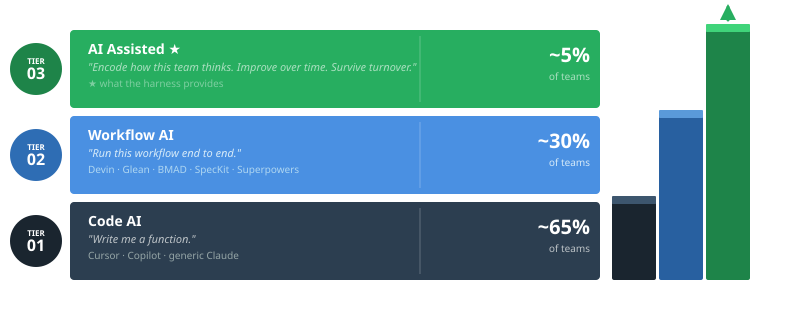

Three tiers of AI adoption
Code AI writes functions on demand, no project context. Workflow AI executes a predefined task end to end, but memory resets every session. Most teams sit on this ladder, fast but not accumulating anything.
Assisted AI encodes how this team thinks and makes it persistent. Not a smarter model: the right project-specific signal, so the AI behaves like a properly onboarded team member.

07